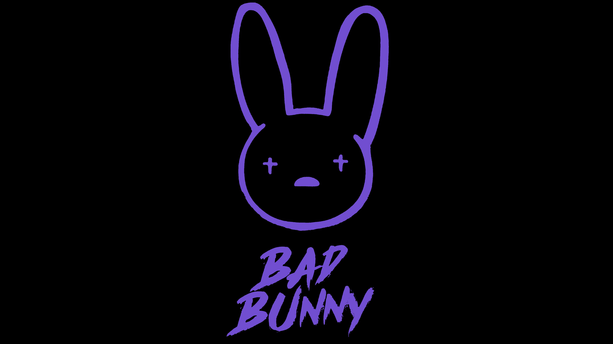

Bad Bunny
Bad Bunny is a Puerto Rican singer and songwriter who made the first all-Spanish record to reach No.1 on the Billboard 200. He has become a household name in the music industry. Blending traditonal reggeton, with latin trap, and other genres, while staying true to his Puerto Rican roots. Learn more about the man behind the music.
